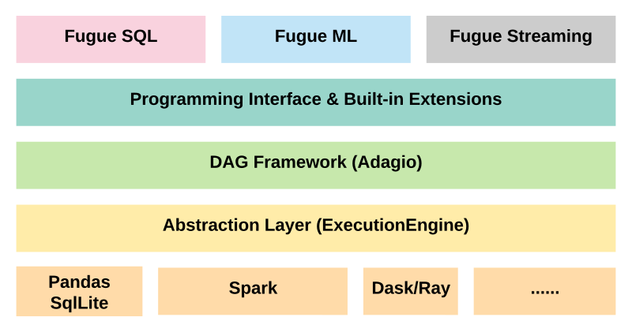

Tutorial for Beginners¶
This tutorial is not only to help you ramp up on Fugue, but more importantly, it helps you better understand the basic concepts of distributed computing from high level. The philosophy of Fugue is to adapt to you, so as long as you understand the basics, you can simply use Fugue to express or glue your logic. Most of your code will stay in native python.
1. Hello World¶
How to get started.
2. Stock Sentiment Analysis (Preprocessing)¶
A Fugue use case for NLP preprocessing. It’s to get a general idea what Fugue is trying to solve, and why we want to add Fugue layer instead of directly using Pandas.
3. Execution Graph (DAG) & Programming Interface (MUST READ)¶
A deep dive on the programming interfaces. In this tutorial we will cover most features of the Fugue programming interface.
4. COVID19 Data Exploration¶
Another Fugue example, this one shows you how to use Fugue SQL to do data analysis
5. Fugue SQL (MUST READ)¶
The most fun part of Fugue. You can use SQL instead of python to represent the backbone of your workflow, while you can invoke python extensions in the SQL-like language. The SQL mindset is great for distributed computing, it can help make your logic more scale agnostic. In this tutorial, we will cover all syntax of Fugue SQL.
6. Extensions¶
From the previous tutorials you have seen plenty of extension examples, here is a complete guide to the Fugue extensions
Transformer (MUST READ)¶
The most useful and widely used extension
CoTransformer¶
Transform multiple dataframes partitioned in the same way
Creator¶
Generate dataframes for a DAG
Processor¶
Take in one or multiple dataframes and produce a single dataframe as output
Outputter¶
Take in one or multiple dataframes to do final jobs such as save and print
7. Deep Dive¶
It’s time to have a systematic understanding of the Fugue architecture.
Data Type, Schema & DataFrames¶
Fugue data types and schema are strictly based on Apache Arrow. Dataframe is an abstract concept with several built-in implementations to adapt to different dataframes. In this tutorial, we will go through the basic APIs and focus on the most common use cases.
Partition (MUST READ)¶
This tutorial is more focused on explaining the basic ideas of data partitioning. It’s less related with Fugue. To have a good understanding of partition is the key for writing high performance code.
Checkpoint¶
Checkpoint is important for advanced users to keep the executions robust and stateful. This section gives you a bigger picture of the checkpoint concept and compared the implementation difference between Fugue and Spark.
Execution Engine¶
The heart of Fugue. It is the layer that unifies many of the core concepts of distributed computing, and separates the underlying computing frameworks from user level logic. Normally you don’t directly interact with execution engines. But it’s good to understand some basics.
Callbacks From Transformers To Driver¶
You can provide a callback function to any transformer, to communicate with driver while running
Fugue Configurations (MUST READ)¶
These configurations can have significant impact on building and running the Fugue workflows.
X-Like Objects Initialization¶
You may often see -like objects in Fugue API document, here is a complete list of these objects and their ways to initialize.